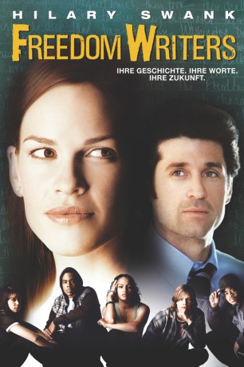

#5187 Freedom Writers
 
 IMDB-Wertung: 7.5 / 10
IMDB-Wertung: 7.5 / 10  Tomatometer: 70
Tomatometer: 70  Metascore: 0
Metascore: 0 
Die angehende weiße Lehrerin Erin Gruwell bekommt eine Anstellung an der Wilson Highschool in Long Beach. Sie soll einen Englischkurs mit von der Schulleitung längst abgeschriebenen Problemkindern ausländischer Herkunft unterrichten, deren Alltag aus Gewalt, Rassismus und Drogen besteht. So hat Erin es am Anfang nicht leicht, sich gegen die jungen Wilden durchzusetzen, doch nach und nach gewinnt sie den Respekt der Kinder und schafft es, die Klasse von ihrer Perspektivlosigkeit zu befreien.
Jahr: 2007
Dauer: 122 Minuten
FSK: 12
Land: Deutschland Studio: UIPTonspuren: DD5.1 - ,
Untertitel:
Auflösung: 1080p (1920x1072) Größe: 8529 MB
Genre: Drama, Krimi, Biographie
Regisseur: Richard LaGravenese
Drehbuch: Leslie Cockburn
Soundtrack:
Darsteller:
 Hilary Swank als Erin Gruwell
Hilary Swank als Erin Gruwell Patrick Dempsey als Scott Casey
Patrick Dempsey als Scott Casey Scott Glenn als Steve Gruwell
Scott Glenn als Steve Gruwell Imelda Staunton als Margaret Campbell
Imelda Staunton als Margaret Campbell- April L. Hernandez als Eva Benitez
- Mario als Andre Bryant
- Kristin Herrera als Gloria Munez
- Deance Wyatt als Jamal Hill
- Vanetta Smith als Brandy Ross
- Gabriel Chavarria als Tito
 Hunter Parrish als Ben Daniels
Hunter Parrish als Ben Daniels- Giovonnie Samuels als Victoria
 John Benjamin Hickey als Brian Gelford
John Benjamin Hickey als Brian Gelford Robert Wisdom als Dr. Carl Cohn
Robert Wisdom als Dr. Carl Cohn Pat Carroll als Miep Gies
Pat Carroll als Miep Gies- Will Morales als Paco
- Ricardo Molina als Eva's Father
- Angela Alvarado als Eva's Mother
- Anh Tuan Nguyen als Sindy's Boyfriend
- Katie Soo als Sindy's Friend
- Liisa Cohen als Brandy's Mother
- Tim Halligan als Principal Banning
 Lisa Banes als Karin Polachek
Lisa Banes als Karin Polachek- Giselle Bonilla als Young Eva
- Angela Sargeant als Marcus' Mother
- Robin Skye als PTA Mom
- Chil Kong als Store Owner
- Dan Warner als Cop #1
- Carl Paoli als Cop #3
- Dominic Daniel als Drug Dealer
- Rock Anthony als Honors Class Student , uncredited
- Dre Bowie als Black Student , uncredited
- Ian Clay als Student , uncredited
 David Cohen als Carnival Attendee , uncredited
David Cohen als Carnival Attendee , uncredited- Ashley Glenn als Student , uncredited
- Robert Gonzalez als Roberto / Evas cousin , uncredited
- Audia Holiday als Student , uncredited
- Elizabeth Ince als Teacher , uncredited
- Michael James Lazar als Marcus's Dead Friend , uncredited
- Ihuoma Ofordire als Black Gang Member , uncredited
- Matt Riedy als Actor , uncredited
- Kirsten Roeters als White Dinner Companion , uncredited
- Joe Seo als Sindy's Asian Gang Member / Student , uncredited
- Joe Towne als Obnoxious Waiter , uncredited
- Jaclyn Ngan als Sindy
- Sergio Montalvo als Alejandro Santiago
- Jason Finn als Marcus
- Antonio García als Miguel
- Armand Jones als Grant Rice
- Brian Bennett als Brandy's Father
Datei: X:\2007(A-F)\Freedom Writers (2007, FSK12, 1920x1072).mkv seit 28.12.2016
Festplatte: HD 2007(A-Z)-2008(A-F)
 Es gibt insgesamt 65 Filme in der Gruppe '2007(A-F)'
Es gibt insgesamt 65 Filme in der Gruppe '2007(A-F)'